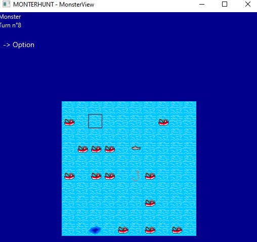
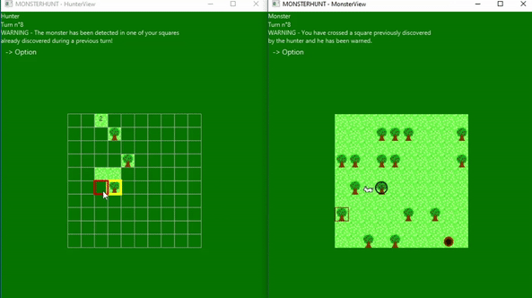
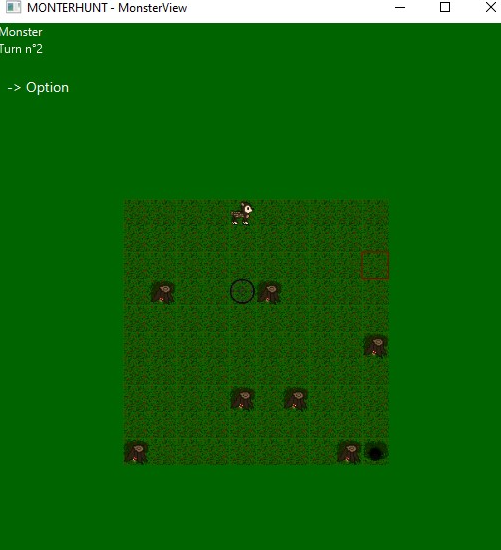

HOME
DESCRIPTION
COMPETENCES (MISE EN PLACE ET ACQUISE)
TF
DESCRIPTION
Projet réalisé en deuxième année de BUT par groupe de 4 personnes.
Nous devions réaliser un jeu type labyrinthe (chasseur / monstre). Ce projet à était réalisé en Java, JavaFX pour l'interface graphique.
Nous avons aussi du developpé des algorithmes et utilisé certains algorithme vu en cours, notamment l'algorthime *A qui est un algorithme utilisé pour les décisions de l'IA, pour trouvé le plus court chemin vers la sortie pour le monstre et pour le chasseur faire des tirs pertinent plutot qu'en random.
Plusieurs niveau d'IA on était codé, facile, qui est du random, intermédiaire qui allie random et l'algorithme *A et difficile qui utilise l'algorithme *A à 100%
  
COMPETENCES MIS EN OEUVRES
COMPETENCES ACQUISES
Consolidation des connaissances sur java
Utilisation d'algorithme pour l'IA
Travail en équipe